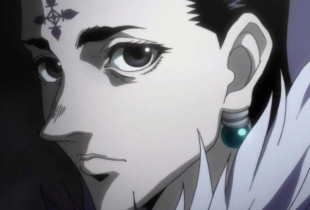
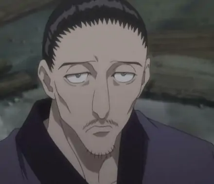
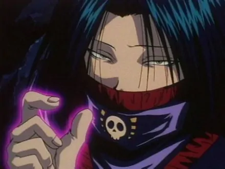
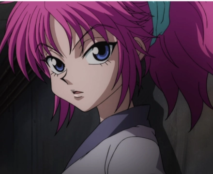
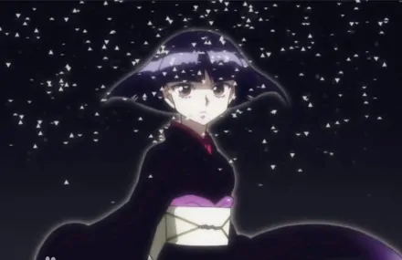
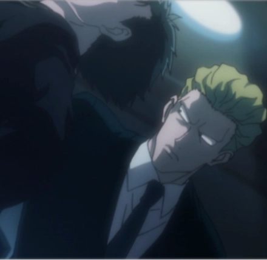
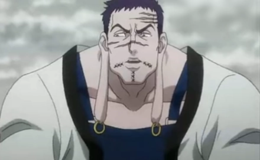
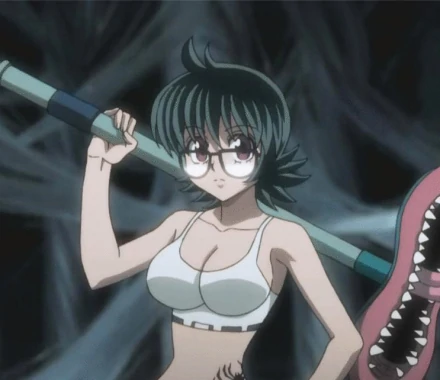
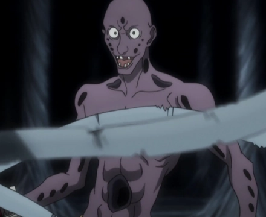
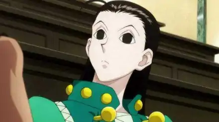

-
旅团背景
幻影旅团的成员主要来自流星街，这是一个充满垃圾的城市，居住着被遗弃的人们。居住在这里的人没有任何官方记录证明他们的存在，很少人知道他们以及流星街的存在。库洛洛创立了幻影旅团和其他六个流星街居民离开这个城市。团员数初定为十三人，初始成员七人，分别为富兰克林，派克诺坦，玛奇，窝金，飞坦，信长，库洛洛。 每位成员的身上都有一个十二只脚的蜘蛛刺青，他们相信一个蜘蛛必须有所有的腿，然后寻找更多的成员。 最常做的事是强盗、杀人，偶尔会做点慈善活动。是流星街的军事力量的主要资金提供者。
-
旅团成员
旅团编号 成员介绍 照片 0 库洛洛·鲁西鲁 特质系能力者。身份为盗贼团体幻影旅团的团长，将性格不同的团员管理的服服帖帖，平时在基地下达命令，必要的时候也会亲自上战场。兴趣是欣赏财宝，尤其喜欢古书籍。  1 信长·哈查马 幻影旅团团员，强化系能力者。居合拔刀术的高手，旅团第一的武斗派。他与同资历的窝金丝多次穿越生死线的好友，作风冷酷，但对于赏识的对象，也有友善的一面。他对小杰和奇犽特别给予高度评价。  2 飞坦·波托欧 幻影旅团成员，变化系能力者。目光锐利的杀手。个性极为冷酷，六亲不认，没血没泪，一如世人对幻影旅团的印象。在说话的方式上，有与众不同的语尾助词，飞坦在旅团担的任务是战斗以及拷问抓回来的敌人。  3 玛奇·考玛奇妮 幻影旅团团员，变化系能力者。外表是娇小可人的少女，但其阳刚的个性使她的言行让人相当招架不住。手很有力气，能展现出三两下制服小杰和奇犽的战斗能力，对于想要和团长决斗的西索怀有戒心。  4 柯特·揍敌客 幻影旅团团员，操作系能力者。为了取代哥哥，作为西索的替补加入幻影旅团，想爬到旅团第二实力位置。在和其他成员抵达流星街，消灭嵌合蚁的过程中，察觉到自己的实力在组织中相当渺小。  5 芬克斯·马古卡普 幻影旅团团员，强化系能力者。旅团的战斗员，总是第一个赶到战斗场所。耐不住性子，动不动就发飙的危险人物，但也有冷静的一面。他与飞坦很合得来，常常一起行动。有时候会穿着外形奇怪的帽子和斗篷，像埃及法老一样。  6 富兰克林·波尔多 幻影旅团团员，放出系能力者。看似凶狠，其实个性老实，很体贴同伴。当团长被敌人囚禁时，旅团成员曾为了是否去救团长而意见不合。可是在富兰克林的说服下而平息。他在旅团是隐性和事老。  7 小滴·村崎 幻影旅团团员，具现化系能力者。小滴在旅团主要负责旅团的善后、搬运工作，因为她的主要念能力是以念能力具现化的吸尘器—凸眼鱼，凸眼鱼可以依照小滴的命令吸入任何东西。小滴为人礼貌，但是天生健忘，混在人群中也很像一个普通的女孩。  8 剥落裂夫·昂顿恩高 幻影旅团团员，具现化系能力者。像木乃伊一样全身缠满绷带的男子。是古东冬多族的族人，身上有许多洞。自从来到友克鑫之后 就受命担任基地的警备，经常守在团长身边，甚少参与行动。  9 伊尔迷·揍敌客 奇犽的大哥，揍敌客家族长子。因为委托而临时加入幻影旅团，顶替西索的位置。  -
旅团事迹
- 1986年 库洛洛·鲁西鲁创立幻影旅团；（团员数初定为十三人，初始成员七人，分别为富兰克林，派克诺坦，玛奇，窝金，飞坦，信长，库洛洛）
- 1994.9～1995.2 为了夺取火红睛（绯红之眼），对窟卢塔族进行了灭族的屠杀；
- 1996.7 全员集合，共13人；
- 1996.7 8号团员被席巴·揍敌客暗杀；4号团员面影被西索“杀死”，西索代替他成为了旅团的4号；
- 1999 加入了新的团员，号码为8号（8号为小滴）；
- 1999.4 玛奇传令给西索，更改命令：不仅仅是“闲着的人”，而是所有的团员必须于8月31日在友克鑫市集合；
- 1999.8.31 正午，所有团员集合，团长下达了“夺取地下拍卖会全部宝物”的命令，并且批准“大开杀戒”；
- 1999.9.1 窝金被窟卢塔族的“锁链手”（酷拉皮卡）杀死；
- 1999.9.4 团长库洛洛被“锁链手”擒住，派克诺妲救出团长后没有遵守审判小指链的命令而死去；团长被封印了念能力，并且被禁止和团员交流、见面；西索离开旅团； [5]
- 1999.9.6 芬克斯和飞坦强行抢夺了Greed Island（贪婪之岛）的游戏，并进入游戏；
- 1999.9.10 侠客、小滴和库哔进入游戏Greed Island；
- 2000 玛奇、剥落裂夫、信长、富兰克林进入游戏；柯特·揍敌客加入，代替了“背叛”旅团的西索，成为4号团员
- 飞坦、侠客、小滴、芬克斯、剥落列夫、柯特六人回到流星街杀死蚂蚁女王。 [6]
- 库洛洛·鲁西鲁恢复念能力并与西索在天空竞技场决斗，并获得胜利；玛奇在给西索整理仪容时，西索通过自己的治能力复活，后杀死库哔和侠客。
-
旅团规则
如果想加入旅团，可以先杀死旅团中的某一个成员，然后就能代替此人成为新的团员。但若是团员因为其他原因而死，团长也会主动去寻找新的团员。
成员之间存在着信任，不太会互相猜忌。
旅团有两条千万不可违反的规矩。
第一条是旅团的存亡重于团长的生命。如果团长死了，就由别的人物来继承首领的地位。
第二条是成员之间意见相左时，以专用的硬币来决定。